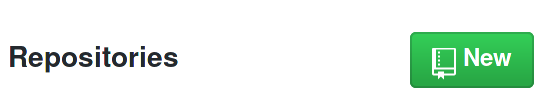
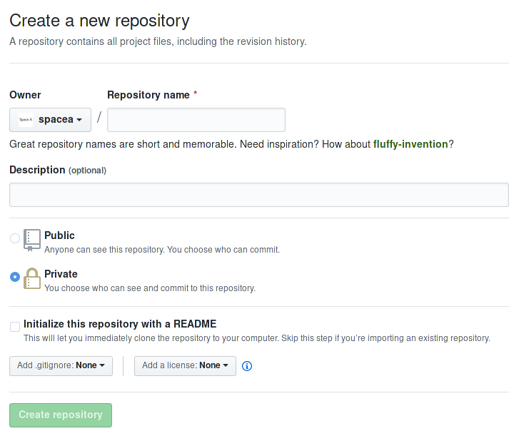
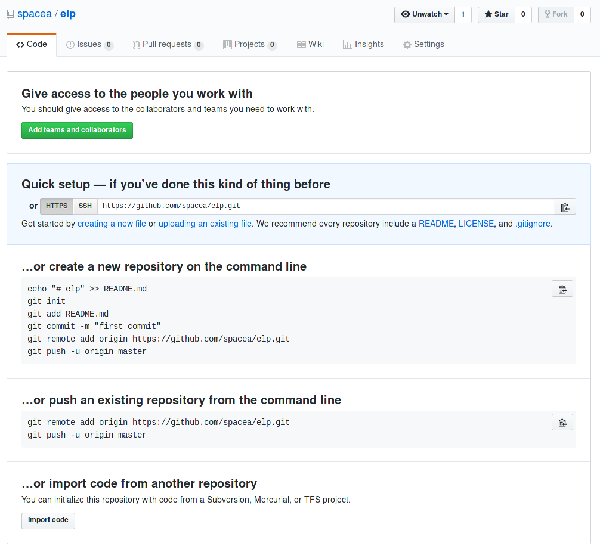
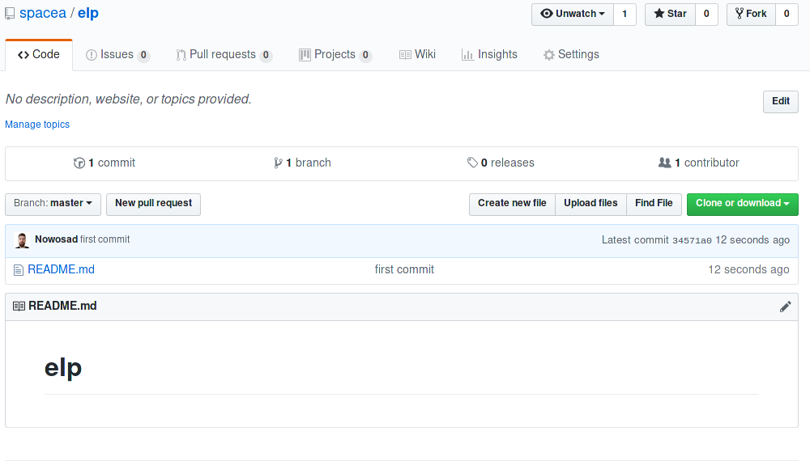
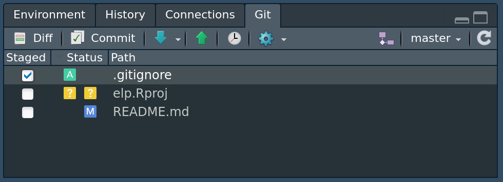

3 Kontrola wersji (1)
Systemy kontroli wersji to narzędzia pozwalające na zapamiętywaniu zmian zachodzących w plikach. Dzięki nim możemy sprawdzić nie tylko kiedy zmieniliśmy dany plik i kto go zmienił, ale co najważniejsze - możemy linia po linii prześledzić zmiany wewnątrz tego pliku. Dodatkowo, mamy możliwość przywracania wersji pliku z wybranego czasu w całej historii jego zmian.
Systemy kontroli wersji są bardzo powszechnie wykorzystywane przy tworzeniu wszelakiego rodzaju oprogramowania. Wynika to nie tylko z ich zalet wymienionych powyżej, ale również rozbudowanych możliwości pozwalających na zorganizowaną współpracę wielu osób nad jednym projektem.
Istnieje wiele systemów kontroli wersji różniących się zarówno używaną terminologią, sposobem działania czy możliwościami.1 Współcześnie najbardziej popularnym systemem kontroli jest Git, a inne popularne systemy kontroli wersji to Concurrent Versions System (CVS), Mercurial czy Subversion (SVN).
3.1 System Git
System Git jest niezależny od języka (lub języków) programowania, które używamy. Jego działanie oparte jest o system komend rozpoczynających się od słowa git, które należy wykonać w systemowym oknie konsoli.2 Zrozumienie działania systemu Git wymaga także poznania kilku nowych terminów.
System Git został zaprojektowany i jest używany głównie do kontroli wersji plików tekstowych. Dzięki temu możemy w prosty sposób zobaczyć, co do linii kodu, w którym miejscu zaszła zmiana. Dodatkowo przechowywanie plików tekstowych i ich zmian nie zajmuje dużo miejsca. Możliwe w systemie Git jest również przechowywanie kolejnych wersji plików binarnych (np. pliki dokumentów, arkusze kalkulacyjne, obrazki, itd.). W ich przypadku niestety nie można liczyć na dokładne sprawdzanie miejsc zmian, a także ich wielkość może powodować znaczne powiększanie się repozytorium.3
3.2 GitHub
GitHub jest serwisem internetowym pozwalającym na przechowywanie i interakcję z repozytoriami w systemie kontroli wersji Git. Posiada on dwa rodzaje repozytoriów - publiczne (ang. public), które może każdy zobaczyć oraz prywatne (ang. private) dostępne tylko dla osób z odpowiednimi uprawnieniami.
Repozytoria połączone są z kontami użytkowników (np. https://github.com/Nowosad to moje konto, gdzie “Nowosad” oznacza nazwę użytkownika) lub organizacjami (np. https://github.com/r-spatialecology to konto organizacji “r-spatialecology”). Pod adresem https://github.com/join można założyć nowe konto użytkownika.
GitHub może być używany do wielu celów, między innymi:
- Przechowywanie kodu źródłowego
- Tworzenie kopii zapasowych różnych wersji oprogramowania i innych plików tekstowych
- Dzielnie się kodem z innymi
- Współpraca nad kodem
- Hosting statycznych stron internetowych i innych dokumentów
- Hosting pakietów R
- Odkrywanie i wykorzystywanie istniejących projektów
- Śledzenie zmian w kodzie innych osób
Możliwe jest również łączenie możliwości serwisu GitHub z innymi serwisami internetowymi, takimi jak Codecov, Gitter i wiele innych.
3.2.1 Tworzenie zdanego repo
Posiadanie konta użytkownika pozwala na, między innymi, tworzenie nowych repozytoriów i zarządzanie nimi. Stworzenie nowego repozytorium odbywa się poprzez naciśnięcie zielonej ikony.
W kolejnym oknie należy podać nazwę nowego repozytorium oraz wybrać czy będzie ono publiczne czy prywatne. Dodatkowo możliwe jest dodanie opisu repozytorium (ang. description), pliku README, czy licencji.

Po wybraniu potwierdzenia (Create repository) utworzone zostanie nowe, puste repozytorium.

Okno pustego repozytorium przedstawia cztery główne drogi pozwalające na dodanie zawartości:
- Szybka konfiguracja - tutaj podane są dwie możliwe ścieżki do zdalnego repozytorium. Pierwsza z nich to adres HTTPS a druga to adres SSH. W sekcji zostanie wyjaśnione jak korzystać z szybkiej konfiguracji.
- Stworzenie nowego repozytorium używając linii komend. Jest to używane w sytuacjach, gdy lokalna wersja repozytorium jeszcze nie istnieje. W tej sytuacji (1) tworzony jest nowy plik tekstowy
README.md, (2) obecny katalog jest określany jako repozytorium Git, (3) plikREADME.mdjest dodawany do repozytorium, (4) dodanie tego pliku jest zatwierdzone wraz z wiadomością `“first commit”, (5) dodana jest ścieżka do zdalnego repozytorium, (6) następuje wysłanie zmian z lokalnego do zdalnego repozytorium. - Wysłanie zmian z istniejącego repozytorium. Ta opcja przydaje się, gdy mamy już istniejące lokalne repozytorium, ale do którego nie ma jeszcze zdalnego repozytorium. Tutaj następuje tylko (1) dodanie ścieżki do zdalnego repozytorium oraz (2) wysłanie zmian z lokalnego do zdalnego repozytorium.
- Import kodu z innego systemu kontroli wersji niż Git.
3.2.2 Repozytorium GitHub
Wygląd okna repozytorium zmienia się po dodaniu pierwszej zawartości.

Teraz możliwe jest podejrzenie występujących tam plików (w tym momencie jedynie plik README.md), zmian jakie zaszły w repozytorium (klikając na commit), istniejących rozgałęzień (klikając na branch) oraz wiele innych. Pod zieloną ikoną Clone or download można dodatkowo znaleźć ścieżkę do tego zdalnego repozytorium.
3.2.3 Dodatkowe możliwości GitHub
W prawym górnym rogu okna repozytorium znajdują się trzy ikony - Watch, Star, Fork. Pierwsza z nich pozwala na określenie czy chcemy dostawać powiadomienia na temat dyskusji prowadzonych wewnątrz danego repozytorium, takich jak utworzenie nowej sprawy. Druga ikona pozwala na oznaczanie interesujących repozytoriów i przez to ułatwiająca znajdowania podobnych projektów. Ostatnia ikona Fork oznacza w tym kontekście rozwidlenie. Po jej kliknięciu następuje utworzenie kopii repozytorium innego użytkownika do naszego konta.
Oprócz dostępu do kodu i jego zmian, GitHub oferuje także szereg dodatkowych możliwości. Obejmuje to, między innymi, automatyczne wyświetlanie plików README, śledzenie spraw (ang. issue tracking), zapytania aktualizacyjne (ang. pull request), wizualizacje zmian, czy nawet tworzenie stron internetowych. Więcej o tych możliwościach dowiecie się później.
ZADANIA
- Zaloguj się platformy GitHub. Przejrzyj jej interfejs – czy rozumiesz co tam się znajduje? W razie wątpliwości – pytaj.
- Załóż nowe repozytorium na GitHubie o dowolnej nazwie.
- Z poziomu platformy GitHub dodaj nowy plik
README.mddo repozytorium, w którym podasz nazwę repozytorium oraz swoje imię i nazwisko. - Pobierz wersję
.ziprepozytorium i rozpakuj ją na swoim komputerze.
3.3 Konfiguracja systemu Git
Kolejnym krokiem po instalacji systemu Git4 jest jego konfiguracja. Można ją wykonać używając wbudowanego terminala (Mac OS i Linux) lub terminala dodanego podczas instalacji systemu Git (Windows). Polega ona na podaniu nazwy użytkownika (np. "Imie Nazwisko") oraz jego adresu email ("email@portal.com").
git config --global user.name "imie nazwisko"
git config --global user.email "email"Podany adres email powinien być zgodny z tym, który został użyty podczas rejestracji na serwisie GitHub.
Gdy już posiadamy konto na GitHubie oraz repozytorium, przychodzi czas na połączenie go z naszym komputerem. Musimy do tego celu stworzyć a następnie dodać do naszego komputera tzw. GitHub Token. Ma to miejsce na stronie https://github.com/settings/tokens, gdzie należy:
- Kliknąć przycisk Generate new token.
- Nadać nazwę tokenowi.5
- Zaznaczyć opcje. Rekomendowane to “repo”, “user” i “workflow”.
- Kliknąć przycisk Generate token.
W efekcie zostanie wygenerowany token, który należy skopiować i zapisać w bezpiecznym miejscu.6
Możliwy jest system pracy, w którym podajemy token za każdym razem, gdy chcemy się połączyć z repozytorium GitHub. Dużo jednak wygodniejszym rozwiązaniem jest dodanie tokena na lokalnym komputerze. W tym celu najlepiej użyć funkcji gitcreds::gitcreds_set().
Komentarz
Alternatywnym sposobem połączenia repozytorium z komputerem jest wykorzystanie kluczy SSH. W tym celu należy wygenerować klucze SSH, a następnie dodać klucz publiczny do konta na GitHubie. Więcej informacji można znaleźć na stronie https://help.github.com/en/github/authenticating-to-github/connecting-to-github-with-ssh.
3.4 Kontrola wersji w RStudio
RStudio posiada wbudowane, uproszczone graficzne wsparcie dla systemu Git. Istnieje też szereg programów, których głównym celem jest ułatwienie pracy z systemem Git. Nazwane są one klientami Git, wśród których można wymienić GitKraken i Sourcetree.7
Najprostszym sposobem połączenia RStudio z systemem Git i serwisem GitHub jest stworzenie nowego projektu:
- Kliknąć
File -> New Project. - Wybrać
Version Control. - Wybrać
Git. - Podać ścieżkę do zdalnego repozytorium (adres HTTPS lub SSH, w zależności od sposobu wybranego wcześniej) oraz wybrać miejsce na dysku, gdzie ma się ten projekt znajdować.
- Kliknąć
Create Project.
W efekcie zostanie utworzony nowy projekt RStudio (w tle wykonywane jest pobranie kopii istniejącego zdalnego repo), który jednocześnie jest lokalnym repozytorium Git. Dodatkowo, w RStudio pojawi się nowy panel “Git”.

W tym panelu są wyświetlone (1) wszystkie pliki, które są w folderze projektu, ale nie w repozytorium Git (żółte ikony statusu), (2) pliki, które chcemy dodać do repozytorium (zielona ikona statusu), oraz (3) pliki, które są już w repozytorium, ale zostały zmodyfikowane (niebieska ikona statusu).8 Ten panel nie pokazuje plików, które nie zostały ostatnio zmienione. Pierwsza kolumna w tym panelu (Staged) domyślnie zawiera same nieodhaczone białe pola. Wybór tego pola (jego odhaczenie) jest równoznaczne z dodaniem zmian.
Dodatkowo nad listą plików znajduje się szereg ikon. Pierwsze dwie z nich (Diff i Commit) wyświetlają okno, które pozwala sprawdzić jakie zmiany zaszły w plikach od ostatniego ich dodania (dolny panel) oraz zatwierdzić zmiany (prawy panel). Kolejne, strzałki w dół i górę, oznaczają odpowiednio aktualizowanie zmian i wysyłanie zmian. Ikona zegarka otwiera nowe okno, w którym można zobaczyć jakie zmiany zaszły w kolejnych zatwierdzeniach zmian (tak zwanych commitach). Następne ikony pozwalają na określenie plików do ignorowania (ikona koła zębatego) oraz tworzenie nowych rozgałęzień. Przedostatni element tego okna to nazwa obecnie ustawionego rozgałęzienia, a po kliknięciu tej nazwy możliwa jest przejście do innego rozgałęzienia.
3.5 Sposoby pracy z systemem Git
Istnieje wiele możliwych sposobów pracy z systemem Git. Zależą one od wielu czynników, takich jak planowany cel repozytorium czy wykorzystywana technologia. Dodatkowo znaczny wpływ na sposób pracy z systemem Git ma czynnik ludzki - przyzwyczajenia osób pracujących nad projektem i ich preferencje. Poniżej pokażę dwa podstawowe sposoby pracy, a bardziej zaawansowane podejścia zostaną omówione w kolejnych rozdziałach.
3.5.1 Nowy projekt
Preferowanym9 sposobem rozpoczęcia pracy nad nowym zadaniem (projektem) w R jest stworzenie nowego, pustego repozytorium w serwisie GitHub, a następnie połączenie z nim nowego projektu RStudio.
flowchart LR A(GitHub) --> B(RStudio -- nowy projekt) B --> C>Naniesienie zmian] C --> D[Staged] D --> E[Commit] E --> F[Push]
W momencie, gdy posiadamy ustawione zarówno lokalne jak i zdalne repozytorium możliwe jest rozpoczęcie pracy. Teraz można tworzyć nowe oraz edytować istniejące pliki. Tutaj zalecane jest najpierw kliknięcie ikony aktualizowania zmian (strzałka w dół), aby upewnić się, że posiadamy aktualną wersję repozytorium. Po każdej wyraźnej zmianie plików (np. ulepszenie kodu, naprawa błędów, dodanie nowych możliwości) należy dodać zmiany oraz je zatwierdzić. Można to zrobić klikając pole Staged przy wybranych plikach oraz następnie ikonę Commit. Teraz można dodać wiadomość opisująca zmiany jakie zaszły, oraz ją zatwierdzić klikając przycisk Commit.
Efektem powyższej operacji jest posiadanie zatwierdzonych zmian w lokalnym repozytorium, ale jeszcze ich brak w repozytorium zdalnym. Kolejnym krokiem jest przesłanie zmian na zdalne repozytorium poprzez kliknięcie ikony wysyłania zmian (strzałka w górę). Jeżeli wszystko poszło zgodnie z planem, nowa wersja repozytorium powinna pojawić się na odpowiedniej stronie serwisu GitHub. Tą czynność warto wykonywać rzadziej niż poprzednią, ale też regularnie.
Komentarz
Często w folderze projektu możesz posiadać pliki, których nie chcesz dodawać do repozytorium. W takiej sytuacji dodaj ich nazwy do pliku .gitignore i staną się one niewidoczne dla systemu Git.
Dalej praca polega na powtarzaniu tych czynności:
- Sprawdzenie czy posiadamy aktualną wersję repozytorium.
- Edycja/dodanie plików czy folderów.
- Dodanie zmian.
- Zatwierdzenie zmian.
- Wysyłanie zmian na zdalne repozytorium.
flowchart LR A["Sprawdzenie<br>aktualności<br>repo<br>(git pull)"] --> B>Edycja/dodanie<br>plików] B --> C["Dodanie<br>zmian<br>(git add)"] C --> D["Zatwierdzenie<br>zmian<br>(git commit)"] D --> E["Wysyłanie<br>zmian<br>na zdalne<br>repozytorium<br>(git push)"]
3.5.2 Istniejący projekt
Czasami posiadasz już jakiś istniejący projekt (folder z kodem źródłowym, itd.), ale chcesz do niego dodać możliwości kontroli wersji. W takich przypadkach najprostszy sposób to stworzenie nowego repozytorium w serwisie GitHub oraz pustego, połączonego z nim nowego projektu RStudio. Następnie należy przekopiować do tego projektu wszystkie już istniejące pliki, dodać je (pole Staged), zatwierdzić oraz przesłać na zdalne repozytorium. Kolejne etapy pracy wyglądają identycznie jak w poprzedniej sekcji.10
ZADANIA
- Dobierzcie się w dwuosobowe grupy.
- Celem pierwszej osoby jest stworzenie nowego repozytorium na GitHubie, połączenie go z nowym projektem RStudio, dodanie nowego pliku
README.mddo repozytorium zawierającego tytuł wiersza “Słoń Trabalski”, oraz przesłanie go na zdalne repozytorium. - Pierwsza osoba następnie dodaje uprawnienia do repozytorium dla drugiej osoby.
- Druga osoba łączy się z repozytorium, dodaje do pliku
README.mdpierwszą linię wiersza (https://wolnelektury.pl/katalog/lektura/tuwim-slon-trabalski.html), zatwierdza zmiany oraz przesyła je na zdalne repozytorium.
3.6 Problemy z kontrolą wersji
W ramach jednego projektu często posiadamy wiele plików z długą historią zmian, do tego nanoszonych przez szereg różnych osób. Jest to sytuacja w której dość prosto o wystąpienie problemów czy nieoczekiwanych (przez użytkownika) zachowań systemu kontroli wersji Git.
Jednym z najczęstszych problemów jest pojawienie się poniższego komunikatu podczas próby wysyłania zmian do zdalnego repozytorium.
>>> git push
To https://github.com/YOU/REPO.git
! [rejected] main -> main (fetch first)
error: failed to push some refs to 'https://github.com/YOU/REPO.git'
hint: Updates were rejected because the remote contains work that you do
hint: not have locally. This is usually caused by another repository pushing
hint: to the same ref. You may want to first integrate the remote changes
hint: (e.g., 'git pull ...') before pushing again.
hint: See the 'Note about fast-forwards' in 'git push --help' for details.Oznacza on, że w repozytorium zdalnym są jakieś zmiany, których nie ma lokalnie. Prawdopodobnie wynikają one z kwestii, że inna osoba przesłała swoje zmiany do zdalnego repozytorium lub też pliki były zmienione i przesłane przez ciebie na innym komputerze. Najczęściej w takiej sytuacji wystarczy aktualizowanie zmian ze zdalnego repo (ikona strzałki w dół), a następnie ponowienie próby wysłania zmian. Czasem jednak mogły zajść zmiany w tym samym pliku edytowanym przez wiele osób. Wówczas konieczne jest ręczne poprawienie problematycznych plików, dodanie zmian i ich zatwierdzenie.
ZADANIA
- Kontynuujcie pracę w dwuosobowych grupach.
- Tym razem zarówno pierwsza, jak i druga osoba mają edytować plik
README.md: pierwsza dodaje drugą linię wiersza, a druga trzecią. - Następnie najpierw pierwsza osoba przesyła zmiany na zdalne repozytorium, a potem druga osoba próbuje to zrobić.
- Rozwiążcie problem, który się pojawił.
Po wykonaniu zadań będziemy mieć czas na dyskusję i pomoc.
Komentarz
GitHub nie jest jedynym serwisem internetowym oferującym hosting repozytoriów Git. Innymi popularnymi serwisami są GitLab i Bitbucket. Każdy z nich oparty jest na podobnych zasadach działania, ale różni się wieloma szczegółami. Dodatkowo możliwe jest stworzenie własnego hostingu repozytoriów Git, ale wymaga to większej wiedzy technicznej.
https://en.wikipedia.org/wiki/Comparison_of_version-control_software#History_and_adoption↩︎
Nie w oknie konsoli R.↩︎
Między innymi z tego powodu internetowe serwisy kontroli wersji posiadają ograniczenia dotyczące wielkości plików. Przykładowo, GitHub ogranicza wielkość pojedynczych plików do 100MB.↩︎
Instrukcje dotyczące instalacji Gita znajdują się we wstępie książki.↩︎
U mnie to często nazwa komputera na którym pracuję.↩︎
Można też użyć funkcji
usethis::create_github_token().↩︎Więcej klientów Git można znaleźć na stronie https://git-scm.com/downloads/guis.↩︎
Możliwe są też inne sytuacje, np. czerwona ikona z literą R sugerująca zmianę nazwy pliku.↩︎
Przeze mnie↩︎
Możliwe jest też dodanie systemu kontroli wersji do istniejącego projektu oraz przypisanie do niego zdalnego repozytorium, ale wymaga to większej wiedzy na temat systemu Git.↩︎